a layered “grammar of graphics” i.e. compose graphs by combining independent components
Graphic layers: data (tidy format), geoms, statistical transformations, position adjustments, coordinate system, facets
Communication layers: labels, annotations, scales, themes, layout
lots of extensions + an active / helpful online community
Weeks 2, 3 & 4
We explored guidelines for choosing a graphic form . . .
“If I had the answer to that, I’d be rich by now…I have no idea, but I can give you some clues to make your own choices based on what we know about why and how visualization works”
(Plus, sticking with just the graphic forms from the hierarchy would get pretty boring)
We discussed some additional tools and approaches for helping us on our chart-choosing journeys
think about the task(s) you want to enable (e.g. compare groups, visualize flow) and / or the message you want to convey
consider the types and number of variables and data points – decision trees, like From Data to Viz can help!
pair multiple graphs together
arrange components of your graphic
test the outcomes of your graphic on others
We explored fundamental chart types. . .
Distributions:
histograms, density plots, ridgeline plots, box plots, violin plots
Amounts & Rankings:
bar plots (inluduing stacked bar plots), lollipop plots, heatmaps, dumbbell charts
Evolution:
line charts, area charts (including stacked & proportional stacked area charts)
Numerical relationships:
scatter plots, bubble plots, 2d density plots
. . . and were introduced to some helpful approaches for improving interpretation
highlighting groups of interest (e.g. {gghighlight})
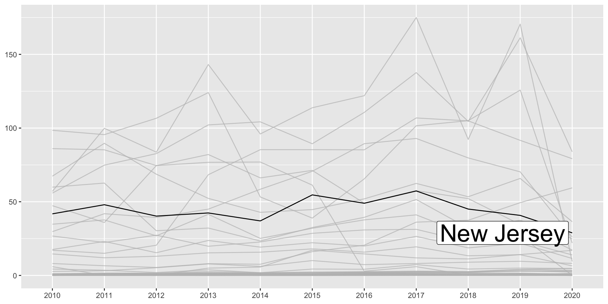
formatting axis labels using {scales}
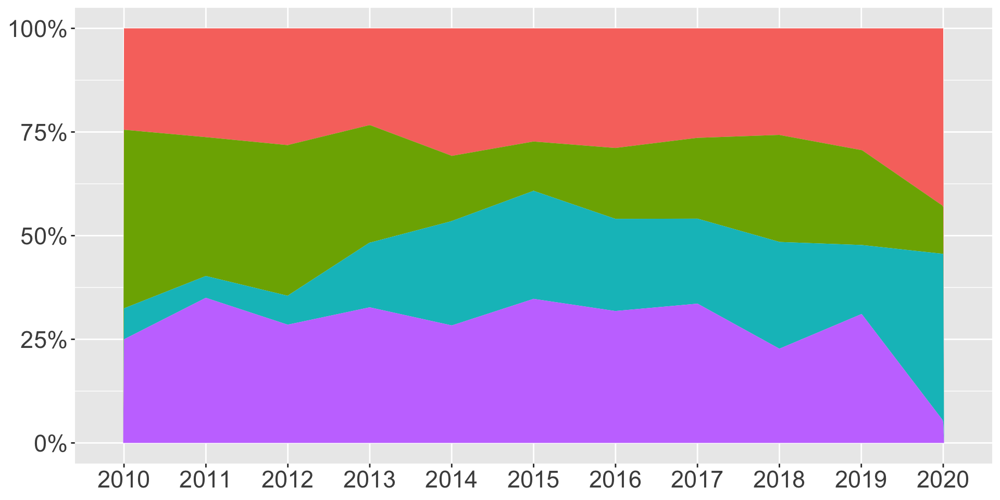
direct labeling & arranging components
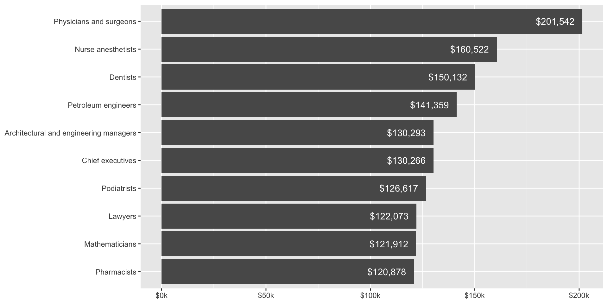
marginal density plots using {ggExtra}
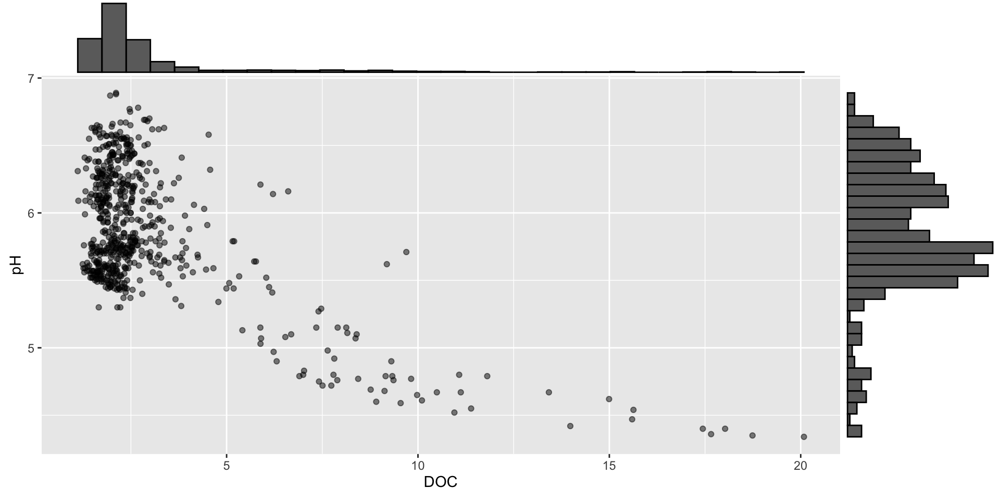
On top of all that, we learned to craft effective alt text to improve data viz accessibility. . .
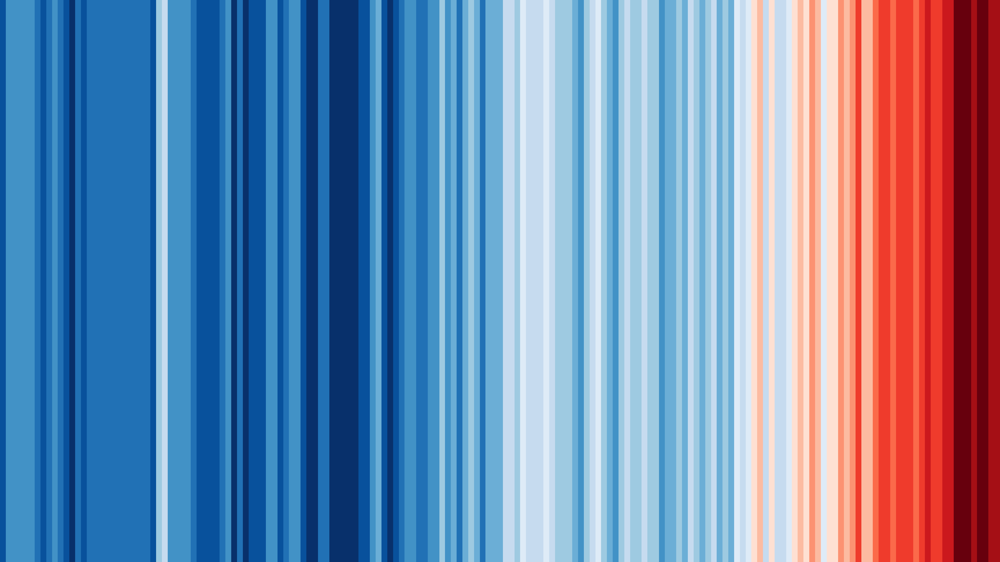
alt=“Colored stripes of chronologically ordered temperatures where they increase in red to show the warming global temperature”
. . . and how to make sure it was added successfully
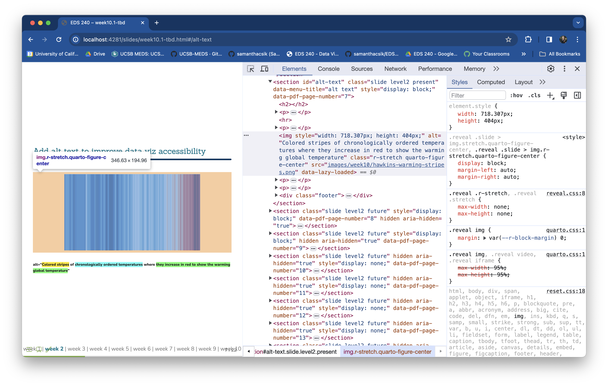
We also learned how to customize plot themes, which is an important part of building aesthetically-pleasing viz. . .
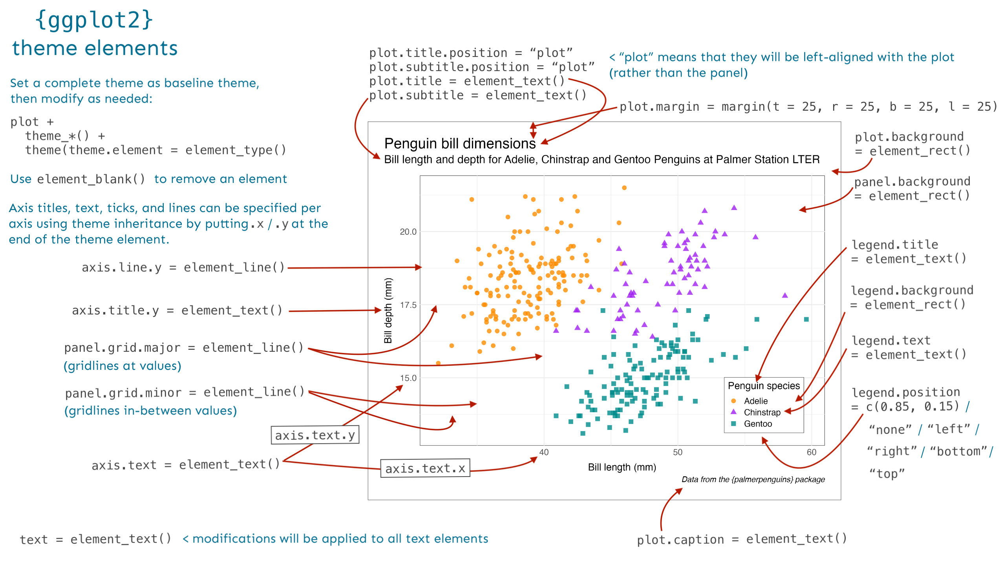
. . . and got some early practice by recreating this iconic visualization
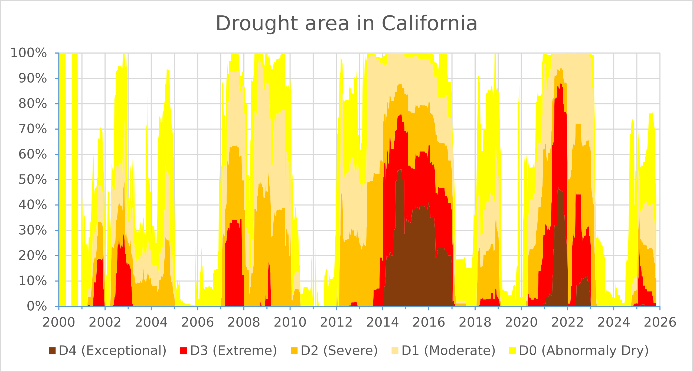
Source: US Drought Monitor
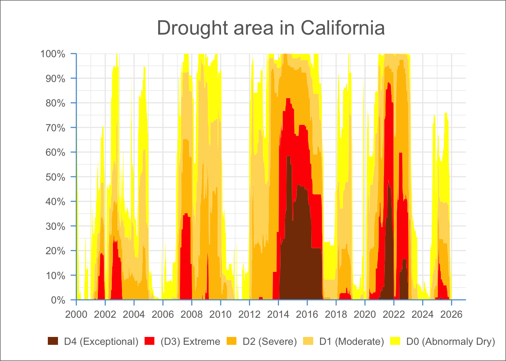
Our recreation!
To wrap things up, we explored what make a good data viz . . .
Maximizing the data-ink ratio (without sacrificing readability and aesthetics) and reducing eye movement (removing redundant info, moving legends, using direct labels, avoiding rotated text).
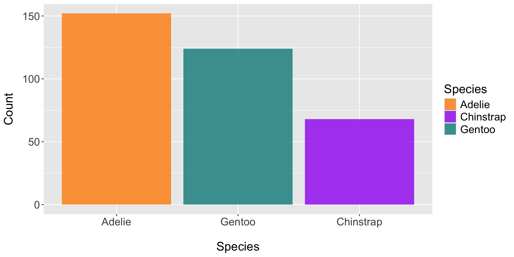
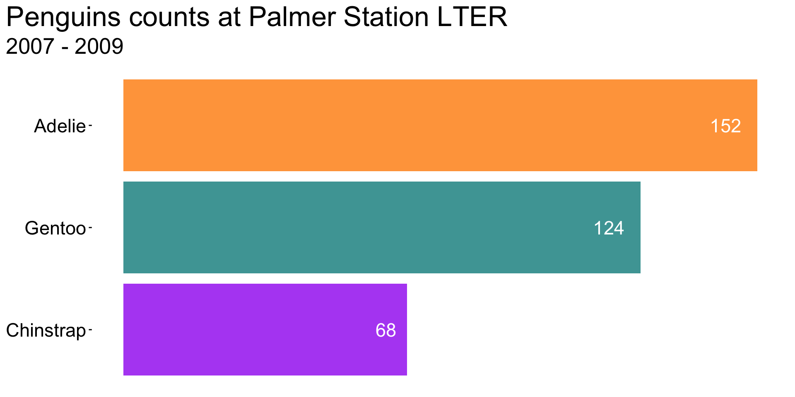
. . . and things to generally avoid
Information overload
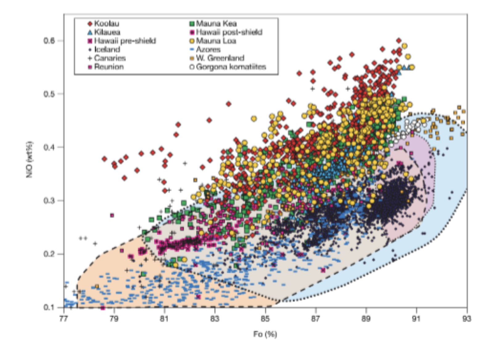
3D plots
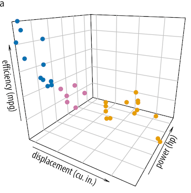
Pie charts
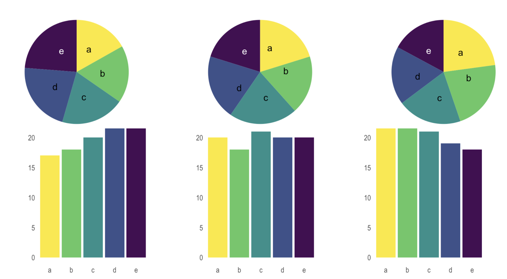
Dual axes
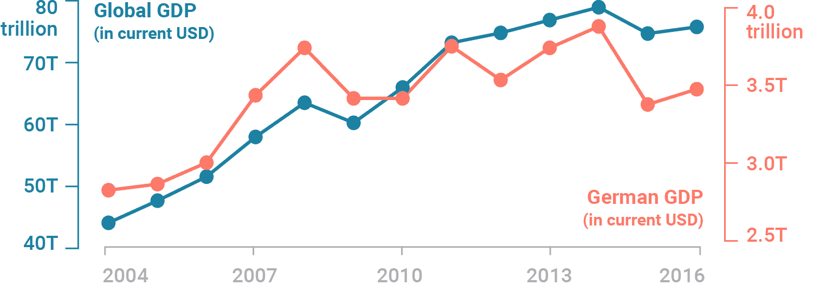
Weeks 5
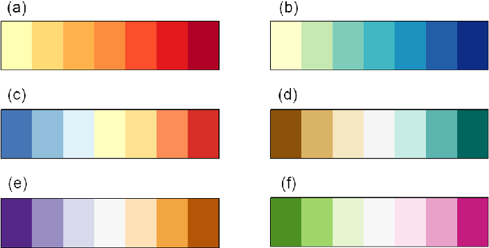
We spent a lot of time discussing the importance of color
From encoding information, to eliciting emotion, it’s critical that we choose our colors purposefully. Some topics we covered:
scale types & when to use which (quantitative vs qualitative; sequential vs. diverging, classed vs. unclassed)
colorblind-friendly palette choices (plus tools for checking)
We practiced telling and understanding stories . . .
adding context, narrative, visuals
storytelling earns trust and evokes emotion
know your audience
no matter the format, audience, or setting we have the opportunity to tell a story
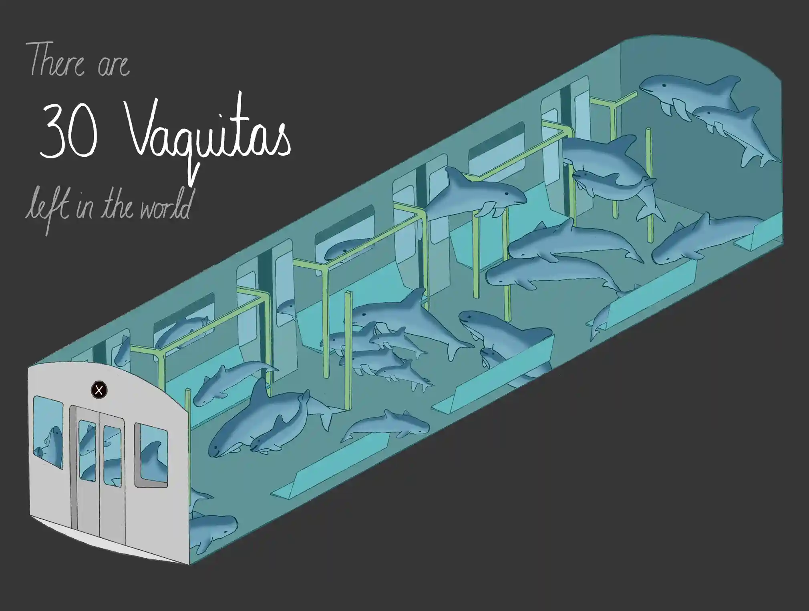
. . . and considered our role in how viewers perceive and interpret information
We discussed incorporating equity awareness as we work with data, how connecting readers with content requires empathy, considering how we (dis)aggregate data, awareness of “othering,” and data humanism.
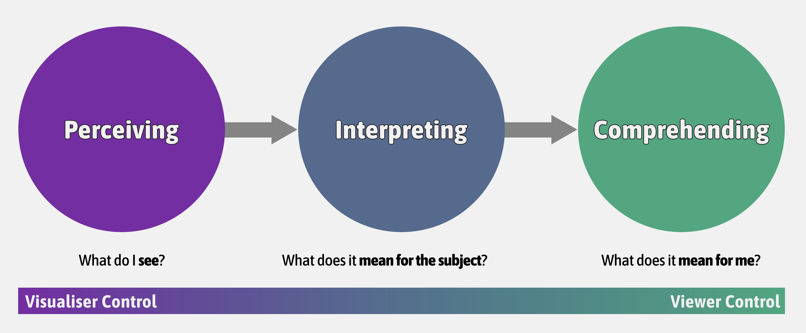
Week 9
Week 9
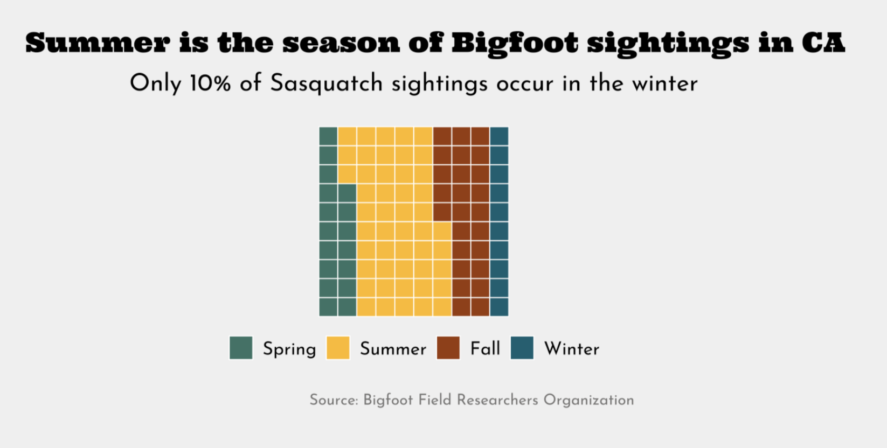
Week 10
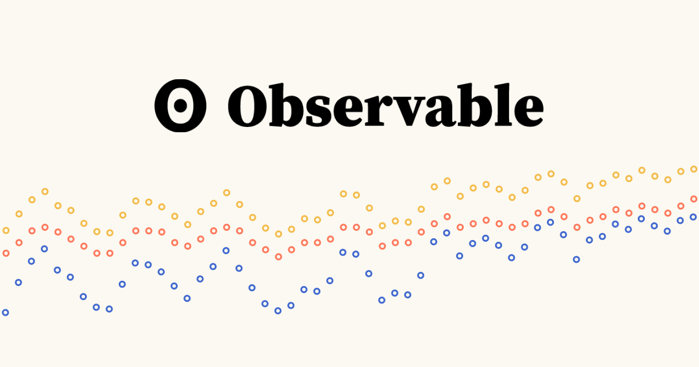
We saw that Observable Plot isn’t so different from {ggplot2}
Building inputs that update data viz outputs in an Observable Notebook is pretty sleek
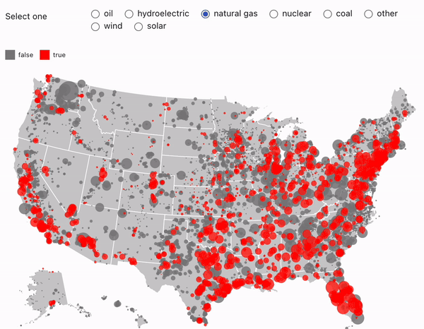
D3 is complex, but opens up limitless data viz possibilities!
But that’s not all!
Along the way, we also did a lot of data wrangling
Never not a precursor to building awesome viz – the {tidyverse} became a familiar friend in helping us clean and tidy data sets, including:
honeybee colonies (USDA)
ocean temperatures (SBC LTER)
national water availability assessment (USGS)
Lyme disease (CDC)
Census data ({tidycensus})
CA droughts (US Drought Monitor)
stream chemistry (Hubbard Brook Experimental Forest, via DataOne’s {metajam})
precipitation data from NOAA National Centers for Environmental Information
Sasquatch sightings (Bigfoot Field Researchers Organization, courtesy of TidyTuesday)
gender pay gap (Bureau of Labor Statistics & Census Bureau, courtesy of TidyTuesday)
{tigris} geometries
Your own data!
And practiced so many other super valuable skills!
Goal setting (self-reflections)
Writing and communication (assignments & reflections)
Repo organization
Writing / rendering / deploying Quarto docs
git / GitHub for version control
Collaborating with peers (in class, on HWs, giving / receiving feedback)
Asking for help (learning partners, student hours)
Looking up documentation
Resourcefulness (Googling, adapting code, looking for inspiration, troubleshooting)
I hope that you all walk from our time together away feeling a bit like this